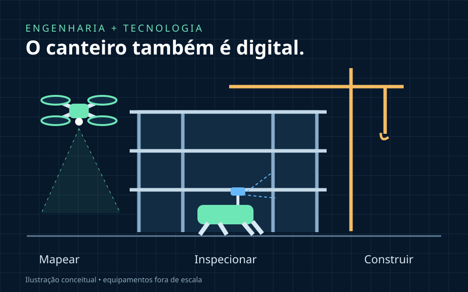
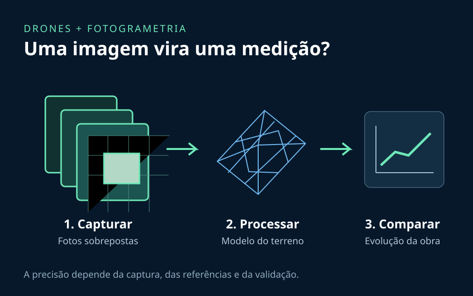
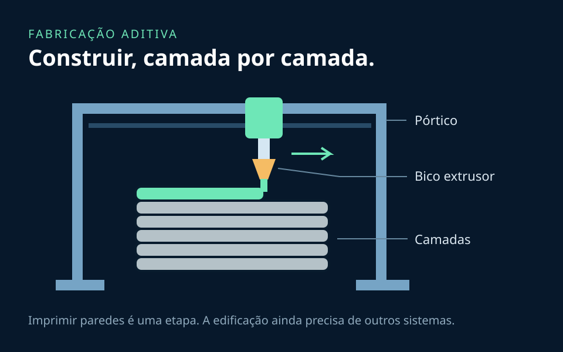
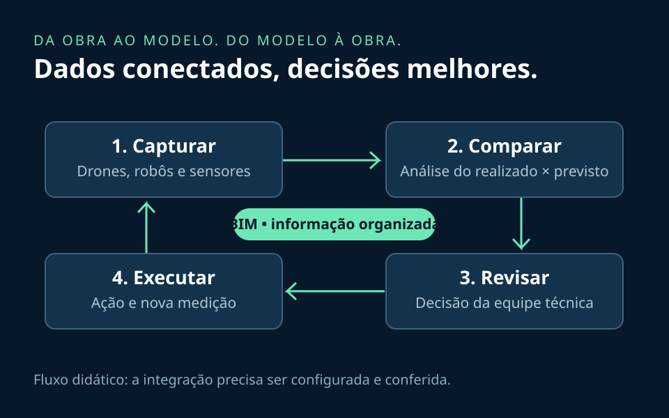

Quando pensamos em um canteiro de obras, é comum imaginar concreto, andaimes, máquinas pesadas e equipes trabalhando em diferentes etapas. Mas esse cenário também pode incluir robôs que coletam imagens, drones que mapeiam terrenos e sistemas capazes de comparar o andamento da obra com o planejamento digital.
A robótica já faz parte da construção civil, embora sua presença varie conforme o tipo de empreendimento, o investimento e as condições de trabalho. A transformação acontece tanto na execução de tarefas quanto na maneira de observar, registrar e decidir o que fazer no canteiro.

Para entender essa mudança, vale acompanhar o caminho da informação: sensores registram o mundo físico; programas organizam e analisam os dados; profissionais avaliam os resultados; e máquinas podem executar parte das ações planejadas. É nessa conexão que robótica, inteligência artificial e engenharia civil se encontram.
O que um robô pode fazer em uma obra?
Um robô combina mecanismos, sensores e controle para realizar tarefas. Na construção, ele pode ser uma plataforma móvel com câmeras, um braço que movimenta uma ferramenta ou uma máquina especializada em uma operação repetitiva. Nem todo robô é autônomo: alguns são controlados à distância, enquanto outros executam sequências com supervisão.
Na inspeção, plataformas terrestres podem transportar câmeras e scanners para registrar ambientes e acompanhar mudanças. Um scanner a laser mede distâncias e pode produzir uma nuvem de pontos: um conjunto de coordenadas que representa as superfícies observadas. Esses registros ajudam a documentar a obra e localizar diferenças em relação ao projeto.
Na execução, um exemplo comercial é o Jaibot, da Hilti. Segundo o fabricante, o equipamento semiautomatizado utiliza um plano digital para marcar e perfurar pontos destinados a instalações no teto. A equipe continua responsável pelo preparo, pelo posicionamento e pela operação do sistema.
O interesse por esse tipo de aplicação está na repetibilidade e na possibilidade de reduzir a exposição a tarefas desgastantes. Mas uma obra muda diariamente: materiais bloqueiam trajetos, o piso pode ser irregular e pessoas circulam perto das máquinas. A automação precisa funcionar dentro dessas condições, com rotas, áreas de operação e procedimentos bem definidos.
Inteligência artificial: transformar registros em decisões
A inteligência artificial entra quando queremos encontrar padrões em grandes conjuntos de dados. Fotografias, relatórios, cronogramas e históricos de ocorrências podem alimentar sistemas que ajudam a classificar informações e destacar pontos que merecem atenção.
Entre as aplicações possíveis estão a identificação de elementos em imagens, a triagem de registros de qualidade e a avaliação de sinais de risco de atraso. Soluções comerciais como as apresentadas pela Autodesk já incorporam IA para apoiar a análise de riscos e o acesso às informações dos projetos. Isso não significa que todo software de planejamento use IA: muitos recursos funcionam com regras e cálculos convencionais.
Pense em um exemplo didático: uma equipe recebe centenas de fotos de diferentes pavimentos. Um sistema de visão computacional pode ajudar a separá-las por elemento ou etapa e sinalizar imagens para revisão. A utilidade está em direcionar a atenção dos profissionais, que verificam o contexto antes de registrar uma conclusão.
A qualidade dos dados faz diferença. Poeira, sombras e objetos encobertos dificultam a interpretação das imagens. Um modelo treinado em um tipo de obra pode ter desempenho pior em outro. Para apoiar prazos e custos, também é necessário conferir se o histórico representa a situação atual; uma previsão depende das informações e das hipóteses usadas.
Uma imagem pode indicar uma possível anomalia, mas não determina sozinha sua causa ou gravidade. A interpretação técnica pode exigir inspeção presencial, medições e ensaios.
Drones: enxergar o canteiro por outra perspectiva
Os drones permitem registrar áreas extensas e observar fachadas, coberturas e regiões de acesso difícil. Voos planejados em momentos diferentes ajudam a documentar a evolução de uma obra. O ganho não vem apenas de fotografar de cima, mas de produzir registros que possam ser comparados.

Na fotogrametria, fotografias com áreas sobrepostas permitem estimar a geometria do cenário. O processamento pode gerar modelos tridimensionais e ortomosaicos, imagens combinadas e corrigidas geometricamente. A Pix4D descreve fluxos para a construção que incluem captura, processamento, medição de distâncias e volumes e compartilhamento dos resultados.
Esses produtos podem apoiar o acompanhamento de terraplenagem e estoques de materiais. Entretanto, uma imagem bonita não garante precisão: referências de posicionamento, resolução, cobertura das fotos e pontos de verificação influenciam a confiabilidade. Vento, chuva, obstáculos e superfícies pouco visíveis também limitam a coleta. O levantamento precisa ser planejado para a medição que se deseja obter.
Impressão 3D: da geometria digital às camadas de material
Na impressão 3D para construção, um equipamento segue trajetórias digitais e deposita material em camadas. Em sistemas de extrusão, um bico conduz uma mistura cimentícia, enquanto um pórtico ou braço robótico controla seu deslocamento. A mistura precisa fluir pelo equipamento e, depois de depositada, manter a forma necessária para receber as camadas seguintes.

A tecnologia tem aplicações comerciais, como as impressoras de construção BOD2, da COBOD, e também frentes de pesquisa. Em 2020, a NASA apresentou estudos com a ICON para investigar sistemas construtivos voltados a futuras missões espaciais, partindo de experiências de impressão realizadas na Terra.
Entre as possibilidades estão produzir geometrias complexas e reduzir o uso de fôrmas em determinadas soluções. Mas imprimir paredes não equivale a entregar uma casa pronta. Fundações, reforços estruturais, instalações, esquadrias, cobertura e acabamento continuam exigindo soluções compatíveis com o projeto.
Também há desafios de aderência entre camadas, controle do material e cura. A sustentabilidade deve ser avaliada no processo completo: economizar material em uma etapa pode ser relevante, mas o consumo de cimento, a energia e o transporte também influenciam o resultado ambiental.
BIM: organizar a informação para conectar as tecnologias
BIM, sigla de Building Information Modeling, envolve a criação e a gestão de informações da construção ao longo de seu ciclo de vida. Um modelo pode associar geometria a propriedades como materiais, identificação de componentes e dados de execução. Assim, uma parede pode carregar informações úteis para diferentes equipes.
Essa organização cria uma referência para comparar o que foi projetado com o que foi observado em campo. A buildingSMART promove o openBIM e padrões como o IFC para facilitar a troca de informações entre ferramentas. A compatibilidade dos dados é uma parte essencial dessa colaboração.

Imagine a seguinte situação: um levantamento registra o avanço de uma área; a equipe alinha esse registro ao modelo; uma análise aponta diferenças; os responsáveis verificam se representam atraso, mudança de projeto ou erro de medição. Só então o planejamento é atualizado e uma nova ação é definida.
Esse fluxo não acontece automaticamente só porque as ferramentas existem. É preciso combinar coordenadas, versões dos arquivos, datas de captura e identificação dos elementos. Sem essa base, até uma medição correta pode ser comparada ao lugar ou à versão errada do projeto.
O que muda para quem trabalha na construção?
A adoção dessas tecnologias pode reduzir tarefas repetitivas e ampliar a capacidade de acompanhar uma obra. Ao mesmo tempo, cria necessidades de operação, manutenção, tratamento de dados e revisão dos resultados. Conhecimento de materiais, execução e planejamento continua fundamental para interpretar o que as máquinas registram.
Uma implantação útil começa com um problema específico: documentar uma área, acompanhar uma etapa ou automatizar uma operação repetitiva. A equipe pode testar a solução em uma parte da obra e comparar o resultado com o processo anterior, considerando tempo de preparação, retrabalho, precisão e custo total de operação.
Treinamento, manutenção e integração entre programas entram nessa conta. Um equipamento rápido pode não trazer o ganho esperado se exigir preparação excessiva ou se seus dados não chegarem a quem decide. Da mesma forma, reduzir a exposição de uma pessoa a uma atividade não elimina os cuidados necessários para operar máquinas perto de outras equipes.
O futuro da obra passa pela colaboração
Robótica, IA, drones, impressão 3D e BIM ampliam as possibilidades de observar, planejar e executar. Seus benefícios dependem de uma combinação concreta: equipamentos adequados, dados confiáveis, processos bem definidos e pessoas preparadas para avaliar os resultados.
Para quem estuda robótica, a construção civil oferece problemas que conectam sensores, programação, controle e percepção ao mundo físico. Para quem estuda engenharia civil, essas ferramentas abrem novas maneiras de acompanhar a execução e transformar informação em melhoria do trabalho.
Se você pudesse aplicar uma dessas tecnologias em uma obra, qual problema resolveria primeiro: inspeção, acompanhamento do progresso ou execução de tarefas repetitivas?
Fontes e imagens
As referências estão vinculadas junto aos exemplos: Hilti (perfuração robotizada), Autodesk (IA), Pix4D (levantamento e análise), COBOD (impressão 3D), NASA (pesquisa em construção aditiva) e buildingSMART (openBIM). As páginas de fabricantes descrevem suas próprias soluções; não são uma garantia de desempenho em qualquer obra.
As quatro ilustrações foram criadas em SVG especificamente para este artigo, sem fotografias, marcas ou elementos gráficos de terceiros. São esquemas didáticos, não registros de obras reais. Os arquivos e sua origem estão documentados nos créditos das imagens.